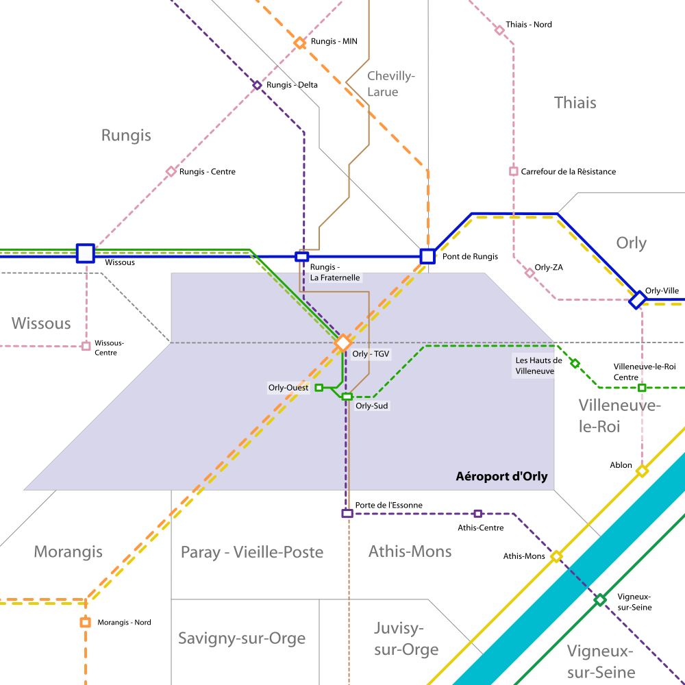

Aéroport d'Orly
Communes de Rungis, Paray-Vieille-Poste, Orly, Villeneuve-le-Roi, Athis-Mons, Wissous


Le secteur de l'aéroport d'Orly - Rungis - MIN est un pôle important du sud de Paris.
Regroupant l'aéroport d'Orly, le MIN de Rungis et les zones d'activités de Rungis et d'Orly, ce secteur est un bassin d'emplois important de la banlieue sud de Paris. Il est actuellement très mal relié à la capitale.
Le plan Ile-de-France propose une solution pour améliorer sa desserte en la polarisant sur une nouvelle gare Orly TGV située au nord de l'aéroport. Cette gare principale serait reliée à Paris par le RER C, le RER F et la ligne 14, à la banlieue est par le grand Orlyval et éventuellement la tangentielle Val-de-Marne et enfin à la banlieue ouest par le métro 18 et le grand Orlyval.
Il y a également une proposition d'extension de la ligne 7 du métro pour desservir l'est et l'ouest de l'aéroport qui sont actuellement des déserts de transports en commun.
Carte
{kind=link}

Cliquer pour agrandir